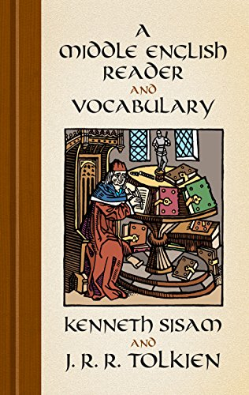
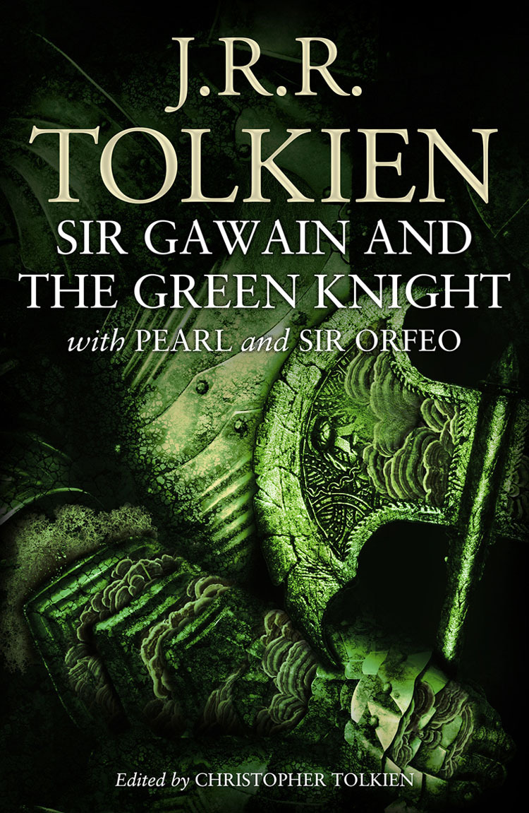
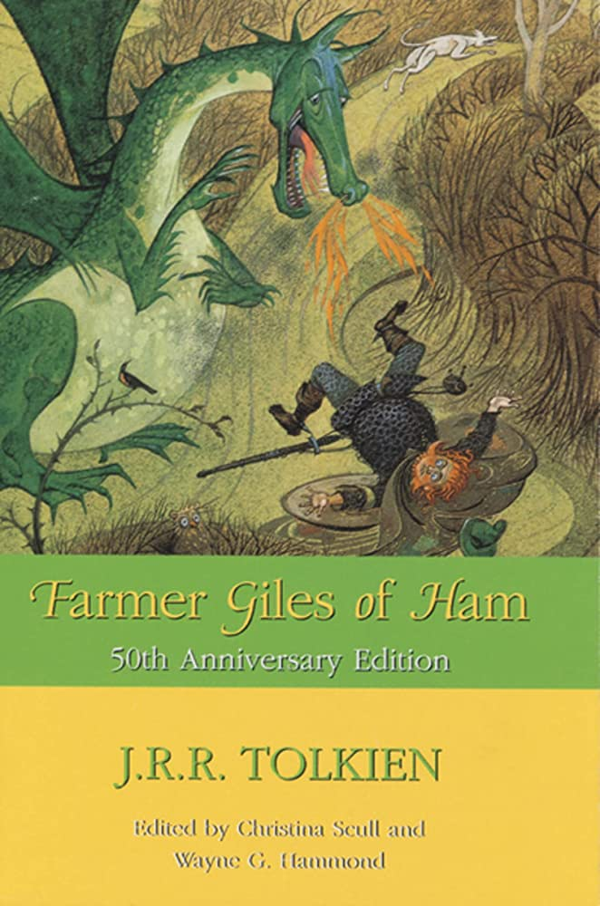

Early Life
- 1857 - Birth of Arthur Reuel Tolkien, Tolkien’s father, in Birmingham.
- 1870 - Birth of Mabel Suffield, Tolkien’s mother, in Birmingham.
- 21 January, 1889 - Birth of Edith Mary Bratt, Tolkien’s future wife, in Gloucester.
- 16 April, 1891 - Arthur Tolkien and Mabel Suffield get married in Cape Town Cathedral.
- 3 January, 1892 - John Ronald (“Ronald” to family and early friends) was born Bloemfontein, South Africa, on 3 January 1892.His father, Arthur Reuel Tolkien, went to South Africa in the 1890s for better prospects of promotion There he was joined by his bride, Mabel Suffield, whose family were not only English through and through, but West Midlands since time immemorial.
- 17 February, 1894 - Birth of Tolkien’s younger brother, Hilary.
- Spring, 1895 - Mabel Tolkien returns to England with her two boys.
- Summer 1896 - Mabel Tolkien rents a cottage near Sarehole Mill, Moseley, on the outskirts of Birmingham.
- February, 1896 - His father died, and he, his mother and his younger brother Hilary returned to England.
- 1900 - Your mother, Mabel and his sister May was received into tha Roman Catholic Church. From then on, both Ronald and Hilary were brought up in the faith of Pio Nono, and remained devout Catholics throughout their lives. The parish priest who visited the family regularly was the half-Spanish half-Welsh Father Francis Morgan.
- autumn, 1900 - Tolkien attends King Edward’s School, Birmingham as a fee-paying student, but he does not attend in December.
- 1901 - Mabel and her boys move to King’s Heath, another suburb of Birmingham.
- 1902 - The Tolkiens move to Edgbaston, Birmingham. The boys are enrolled at St Philip’s Grammar School, but later in the year Ronald is educated at home
- January, 1903 - Tolkien attends King Edward’s School again, this time on a scholarship.
- 1904 - Mabel was diagnosed as having diabetes. She died on 14 November of this year, leaving two orphaned boys. At this point Father Francis took over, and made sure of the boys’ material as well as spiritual welfare, although in the short term they were boarded with an unsympathetic aunt-by-marriage, Beatrice Suffield, and then with a Mrs Faulkner.
- 1911 - He was invited to join a party on a walking holiday in Switzerland, which may have inspired his descriptions of the Misty Mountains, and of Rivendell. In the autumn of that year he went up to Exeter College, Oxford where he stayed, immersing himself in the Classics English, the Germanic languages (especially Gothic), Welsh and Finnish, until 1913, when he swiftly though not without difficulty picked up the threads of his relationship with Edith.
- Autumn Term ,1907 - Tolkien probably invents his private language ‘Naffarin’ based on Spanish and Latin.
- 1908 - The boys move to Duchess Road and live with Mrs. Faulkner. Tolkien meets Edith Bratt, another lodger.
- Autumn, 1909 - Father Francis Morgan discovers the romance between Tolkien and Edith. Ronald fails a scholarship to Oxford.
- Autumn, 1910 - The Tolkien brothers move to new lodgings where Ronald’s romance with Edith continues until Father Francis forbids him to communicate with her.
- March, 1910 - Edith moves to Cheltenham.
- 4 November, 1910 - Tolkien speaks in his school debating society deploring the occurrence of the Norman Conquest.
- 17 December, 1910 - Tolkien obtains a scholarship at Oxford’s Exeter College.
- March, 1911 - Tolkien’s poem ‘The Battle of the Eastern Field’ is printed in the King Edward’s School Chronicle.
- Summer Term, 1911 - Tolkien becomes school librarian, and the T.C.B.S. is formed.
- August, 1911 - Tolkien visits Switzerland before starting university.
Oxford, War and Early Career
- Octuber, 1911 - Tolkien begins studying at Oxford.
- November, 1911 - Tolkien begins studying Finnish.
- 3 November, 1912 - Tolkien becomes a member of the Exeter College Essay Club.
- 1913 - Tolkien writes to Edith on his 21st birthday, and soon after they become engaged.
- Late Jul-Aug1913 - Tolkien is paid to accompany two Mexican boys and their aunts to Paris and Dinard. One of the aunts is hit by a car and dies.
- 1913 - He took a job as tutor and escort to two Mexican boys in Dinard, France, a job which ended in tragedy. Though no fault of Ronald’s, it did nothing to counter his apparent predisposition against France and things French.
- January1914 - Tolkien and Edith become betrothed after she is received into the Catholic Church.
- 24 September, 1914 - Tolkien writes his first identifiable “Middle-earth” fragment ‘The Voyage of Éarendel the Evening Star’.
- Autumn, 1914 - Tolkien begins to write The Story of Kullervo.
- 24 November, 1914 - Tolkien revises the poem later called ‘The Horns of Ylmir’ [ie. Ulmo].
- April, 1915 - The poems ‘You & Me and the Cottage of Lost Play’ and ‘Kôr’ are written. Tolkien gains a First Class Honours degree. He obtains a commission in the Lancashire Fusiliers and trains in Bedford and Staffordshire.
- 1915 - Achieved a first-class degree, in June.At this time he was also working on various poetic attempts, and on his invented languages, especially one that he came to call Qenya [sic], which was heavily influenced by Finnish—but he still felt the lack of a connecting to his vivid but disparate imaginings together.
- 12 September, 1915 - Tolkien writes the poem ‘A Song of Aryador’ while stationed in Staffordshire.
- 25-6 September, 1915 - Final meeting of all four main members of the T.C.B.S. in Lichfield.
- 8 November, 1915 - Tolkien writes the poem ‘Kortirion among the Trees’.
- December, 1915 - Tolkien’s poem ‘Goblin Feet’ is published in Oxford Poetry 1915.
- Jan-Feb, 1916 - Tolkien writes ‘Over Old Hills and Far Away’ a poem featuring Tinfang Warble.
- Jan-Feb, 1916 - Tolkien writes ‘Over Old Hills and Far Away’ a poem featuring Tinfang Warble.
- 1916 - In this years, he already hade a number of close friends at King Edward’s; in his later years at school they met regularly after hours as the “T. C. B. S.” (Tea Club, Barrovian Society, named after their meeting place at the Barrow Stores) and they continued to correspond closely and exchange and criticise each other’s literary work until 1916
-
1916 - For many months Tolkien was kept in boring suspense in England, mainly in Staffordshire. Finally it appeared that he for France, and he and Edith married in Warwick on 22 March 1916. Tolkien and Edith married in Warwick on 22 March 1916. Eventually he was indeed sent to active duty on the Western Front, just in time for the Somme offensive. After four months in and out of the trenches, he succumbed to “trench fever”, a form of typhus-like infection common in the insanitary conditions, and in early November was sent back to England, where he spent the next month in hospital in Birmingham. By Christmas he had recovered sufficiently to stay with Edith at Great Haywood in Staffordshire. During these last few months, all but one of his close friends of the “T. C. B. S.” had been killed in action. Partly as an act of piety to their memory, but also stirred by reaction against his war experiences, he had already begun to put his stories into shape:
“… in huts full of blasphemy and smut, or by candle light in bell-tents, even some down in dugouts under shell fire” [Letters 66].
This ordering of his imagination developed into the Book of Lost Tales (not published in his lifetime), in which most of the major stories of the Silmarillion appear in their first form: tales of the Elves and the “Gnomes”, (i. e. Deep Elves, the later Noldor), with their languages Qenya and Goldogrin. Here are found the first recorded versions of the wars against Morgoth, the siege and fall of Gondolin and Nargothrond, and the tales of Túrin and of Beren and Lúthien. - 22 March, 1916 - Ronald and Edith are married in Warwick.
- Apr-May, 1916 - Tolkien was based in Otley, near Leeds as he took an army signalling course. Edith lives in Great Haywood.
- 6 June, 1916 - Tolkien travels to France. On the boat he writes the poem ‘The Lonely Isle’. Tolkien becomes a Battalion Signalling Officer.
- 6 June, 1916 - Battle of the Somme begins. Rob Gilson, close friend and member of the T.C.B.S. dies.
- 27 Octuber, 1916 - Tolkien reports sick.
- 9 November, 1916 - Suffering from trench fever, Tolkien returns to England.
- 3 December, 1916 - G.B. Smith, a member of the T.C.B.S., dies from wounds received 4 days earlier.
- 1917 - Throughout 1917 and 1918 his illness kept recurring, although periods of remission enabled him to do home service at various camps sufficiently well to be promoted to lieutenant. It was when he was stationed in the Hull area that he and Edith went walking in the woods at nearby Roos, and there in a grove thick with hemlock Edith danced for him. This was the inspiration for the tale of Beren and Lúthien, a recurrent theme in his “Legendarium”. He came to think of Edith as “Lúthien” and himself as “Beren”.
- Jan-Feb, 1917 - Tolkien works on The Book of Lost Tales during convalescence in Great Haywood.
- Spring 1917 - ‘The Fall of Gondolin’ is probably written before June. He is posted to Yorkshire, but he suffers recurring bouts of illness.
- May 1917 - Tolkien is inspired by watching Edith dance in a ‘hemlock’ glade near Roos. This is the germ for the meeting of Lúthien and Beren in his legendarium.
- Before 13 August, 1917 - Tolkien is admitted to Brooklands Officers’ Hospital, Hull, where among other things he works on ‘The Tale of Tinúviel’, ‘The Grey Bridge of Tavrobel’, and on a lexicon and grammar of his Gnomish language.
- 16 November1917 - His first son, John Francis Reuel born in Cheltenham(After Father John Tolkien).
- Late, 1917 - Tolkien probably starts work on The Tale of Turambar.
- Jul-Sep, 1918 - Tolkien is readmitted to Brooklands Officers’ Hospital.
- November, 1918 - 11 November: The Armistice was signed. By the time he was demobilised he had been appointed Assistant Lexicographer on the New English Dictionary (the “Oxford English Dictionary”), then in preparation. While doing the serious philological work involved in this, he also gave one of his Lost Tales its first public airing—he read The Fall of Gondolin to the Exeter College Essay Club, where it was well received by an audience which included Neville Coghill and Hugo Dyson, two future “Inklings”. Tolkien probably begins work on the first version of ‘The Music of the Ainur’.
- 1919 - Tolkien works as a freelance tutor in addition to work for the Oxford English Dictionary. He probably writes an early version of ‘The Chaining of Melko’, ‘The Coming of the Elves and the Making of Kôr’ and ‘The Theft of Melko and the Darkening of Valinor’.
- 10 March, 1920 - Tolkien reads a shortened version of ‘The Fall of Gondolin’ to the Exeter College Essay Club.
- 1920 - In summer of this year, Tolkien applied for the quite senior post of Reader (approximately, Associate Professor) in English Language at the University of Leeds, and to his surprise was appointed. At Leeds as well as teaching he collaborated with E. V. Gordon on the famous edition of Sir Gawain and the Green Knight, and continued writing and refining The Book of Lost Tales and his invented “Elvish” languages. In addition, he and Gordon founded a “Viking Club” for undergraduates devoted mainly to reading Old Norse sagas and drinking beer. It was for this club that he and Gordon originally wrote their Songs for the Philologists, a mixture of traditional songs and original verses translated into Old English, Old Norse and Gothic to fit traditional English tunes.
- Autumn Octuber, 1920 - Your second son, Michael Hilary Reuel.
- December, 1920 - Tolkien writes a letter to John as if from Father Christmas, which is the first of The Father Christmas Letters.
- March, 1921 - Tolkien finds suitable rented rooms in Headingley, Leeds for his family, who move up from Oxford to join him a few weeks later. Tolkien may have begun an alliterative poetic version of The Children of Húrin once he was settled in Leeds.
- Late August, 1921 - The Tolkiens move nearer to Leeds University at St Mark’s Terrace, Woodhouse Lane. Tolkien and E.V. Gordon begin work on their edition of Sir Gawain and the Green Knight.
- Late August, 1922 - A Middle English Vocabulary is published. Tolkien and E.V. Gordon begin work on their edition of Sir Gawain and the Green Knight.
- Summer, 1923 - Convalescing from pneumonia on his brother’s farm, Tolkien turns to his mythology again, and probably works on an early form of Qenya.
- Oct-Nov, 1923 - ‘The Cat and the Fiddle: A Nursery-Rhyme Undone and its Scandalous Secret Unlocked’ is published in Yorkshire Poetry.
- December 1923 - The Father Christmas Letters become more elaborate.
- 17 March, 1924 - The Tolkiens move into a three-storey house in Darnley Road, West Park, Leeds.
- May 1924 - Tolkien writes the poem ‘The Nameless Land’.
- 16 July, 1924 - Tolkien is appointed as Professor of English Language at Leeds University.
- 21 November, 1924 - Born your son, Christopher Reuel.
- Early, 1925 - Tolkien works on the alliterative poem ‘The Flight of the Noldoli from Valinor’.
- 25 April, 1925 - Tolkien and E.V. Gordon’s edition of Sir Gawain and the Green Knight is published by the Clarendon Press.
- June, 1925 - Publication of the poem ‘Light as Leaf on Lindentree’ in The Gryphon.
- Summer, 1925 - Tolkien begins work on the Lay of Leithian.
- Early Sep, 1925 - On holiday in Filey, Yorkshire, Tolkien relates the story of a toy dog, ‘Rover’, which is posthumously published as Roverandom.
- Autumn, 1925 - Tolkien takes up an appointment as Rawlinson and Bosworth Professor of Anglo-Saxon at Oxford. He purchases a house in Oxford.
- 7 January, 1926 - The Tolkien family move to 22 Northmoor Road, Oxford.
- February, 1926 - Tolkien forms the Kolbítar club (Coalbiters).
- 11 May, 1926 - First known meeting between C.S. Lewis and Tolkien, and they soon become friends.
- Autumn, 1926 - Tolkien lectures on The Old English Exodus for the first time. Tolkien probably writes the Sketch of the Mythology and the first version of Farmer Giles of Ham may date from this year.
- January, 1928 - A New Glossary of the Dialect of the Huddersfield District with Tolkien’s foreword is published.
- May-Apr, 1928 - Tolkien works on Cantos IV-IX of The Lay of Leithian.
- Summer, 1928 - Tolkien probably illustrates and writes Mr. Bliss.
- 18 Juner, 1929 - Priscilla, the Tolkiens’ only daughter, and youngest child is born.
- December, 1929 - C.S. Lewis reads and critiques the Lay of Leithian.
- 14 January, 1930 - The Tolkiens move next door to 20 Northmoor Road.
- Spring, 1930 - Tolkien composes a large part of The Fall of Arthur.
The Hobbit, The Lord of the Rings and Academic Career
- Summer, 1930 - About this time, Tolkien may have written the first sentence of The Hobbit: “In a hole in the ground there lived a hobbit“.
- 23 September, 1930 - Tolkien works on Cantos X-XIII of The Lay of Leithian.
- Autumn, 1930 - Quenta Noldorinwa, an expansion of the Sketch of the Mythology may have been written at this time.
- September, 1931 - Tolkien works on The Lay of Leithian, but abandons it at Canto XIV, line 4223.
- 19-30 September, 1931 - Tolkien and Hugo Dyson talk with C.S. Lewis, who begins to shift from believing in God to accepting Christ. This event also inspires Tolkien to later write the poem ‘Mythopoeia’.
- Autumn, 1931 - The essay A Secret Vice about inventing private languages is probably written at this time.
- 1932 - Tolkien probably lends the typescript of The Hobbit to C.S. Lewis, which at this time ends with the death of Smaug.
- Early Autumn, 1933 - Tolkien probably writes lectures on Beowulf, which will provide the basis for his famous essay Beowulf: The Monsters and the Critics.
- Autumn, 1933 - The Inklings meetings under the auspices of C.S. Lewis become an important part of Tolkien’s social life.
- 9 November, 1933 - His poem ‘Errantry’ is published in The Oxford Magazine.
- 15 February, 1934 - The poem ‘The Adventures of Tom Bombadil’ is published in the Oxford Magazine. Tolkien’s paper Chaucer as a Philologist: The Reeve’s Tale is published in the second half of 1934.
- 11 June, 1935 - Death of Father Francis Morgan, Tolkien’s guardian.
- Early, 1936 - Susan Dagnall of Allen & Unwin reads the unfinished manuscript of The Hobbit. She urges him to finish the narrative, and it is accepted for publication.
- 7 August, 1936 - An excerpt from Tolkien’s translation of Pearl is read on BBC Radio. Some time this year Songs for the Philologists by Tolkien, E.V. Gordon et al is privately printed by students at University College, London.
- 25 November, 1936 - Tolkien delivers his lecture, Beowulf: the Monsters and the Critics, to the British Academy in London. Tolkien probably wrote The Lost Road at about this time, which marks the invention of Númenor.
- April, 1937 - Tolkien takes an exhausting walking holiday in the Quantock Hills with C.S. Lewis and Owen Barfield.
- 1 July, 1937 - Beowulf: The Monsters and the Critics is published.
- 21 September, 1937 - The Hobbit is published. Because of its success, Stanley Unwin subsequently urges Tolkien to write a sequel, which he begins. This is the germ of The Lord of the Rings.
“In a hole in the ground there lived a hobbit“.
- 15 Nov-19 Dec, 1937 - Tolkien resumes work on the Quenta Silmarillion, but abandons this to work on ‘The new Hobbit’.
- 14 January, 1938 - Tolkien’s talk Anglo-Saxon Verse is broadcast on BBC Radio.
- 14 February, 1938 - Tolkien reads an expanded early version of Farmer Giles of Ham to the Lovelace Society.
- 4 March, 1938 - Before this date the Black Riders have appeared during the writing of The Lord of the Rings.
- Late August, 1938 - The narrative has reached the seventh chapter – the Hobbits arrival at the Prancing Pony.
- 1-15 Sep, 1938 - Tolkien continues writing and reaches Rivendell.
- 15 Sep-Oct, 1938 - Tolkien rewrites earlier parts of the narrative, and continues to alter the names of the Hobbits.
- 8 March, 1939 - At St. Andrews University, Scotland, Tolkien gives his lecture On Fairy-Stories.
- 27-29 March, 1939 - Tolkien in London does 3 days’ code and cipher training.
- Autumn, 1939 - Charles Williams starts attending meetings of ‘The Inklings’. Tolkien works on early versions of ‘The Council of Elrond’, ‘The Ring Goes South’, and a first draft of ‘The Mines of Moria’.
- 26-7 August, 1940 - Tolkien invents Saruman as a reason for Gandalf’s delay in reaching Bag End in The Lord of the Rings.
- later, 1941 - Tolkien works on the Lothlórien chapters and the first versions of ‘The Breaking of the Fellowship’ and commences work on the early chapters of The Two Towers.
- 5 February, 1942 - After this date ‘The King of the Golden Hall’ is written.
- April, 1942 - Tolkien writes Leaf by Niggle.
- Mid, 1942 - Tolkien writes what becomes ‘Helm’s Deep’, ‘The Road to Isengard’, ‘Flotsam and Jetsam’, ‘The Voice of Saruman’, and ‘The Palantír’.
- Mid, 1943 - Tolkien is busy with university duties, work as an air-raid warden plus other distractions and is unable to work on The Lord of the Rings.
- Mid, 1943 - Tolkien writes his final Father Christmas Letter to Priscilla.
- April, 1944 - Tolkien works on ‘The Taming of Sméagol’, ‘The Passage of the Marshes’, ‘The Black Gate is Closed’ and ‘Of Herbs and Stewed Rabbit’.
- May, 1944 - Tolkien writes early versions of the later chapters ‘The Window on the West’, The Forbidden Pool’, ‘Journey to the Cross-Roads’, ‘The Stairs of Cirith Ungol’, ‘Shelob’s Lair’ and ‘The Choices of Master Samwise’.
- January, 1945 - Leaf by Niggle is published in the Dublin Review.
- 1945 - He changed his chair to the Merton Professorship of English Language and Literature, which he retained until his retirement in 1959.
- 23 June, 1945 - Tolkien becomes Oxford’s Merton Professor of English Language and Literature.
- December, 1945 - The Lay of Aotrou and Itroun appears in the Welsh Review.
- Christmas, 1945 - Tolkien works on The Notion Club Papers.
- Summer, 1946 - Tolkien reads his newly-completed The Drowning of Anadûnê to his son, Christopher.
- Autumn, 1946 - Tolkien works on the chapters ‘Minas Tirith’, ‘The Passing of the Grey Company’, ‘The Muster of Rohan’, ‘The Siege of Gondor’, ‘The Battle of the Pelennor Fields’ ‘The Pyre of Denethor’, ‘The Houses of Healing’, ‘The Last Debate’ and ‘The Black Gate Opens’.
- March, 1946 - The Tolkien family move to Manor Road, Oxford.
- 4 December, 1947 - On Fairy-Stories is published in Essays Presented to Charles Williams.
- Aug-Sep, 1948 - Tolkien drafts the chapters ‘The Land of Shadow’, ‘Mount Doom’, ‘The Field of Cormallen’, ‘The Steward and the King’, ‘Many Partings’, ‘Homeward Bound’, ‘The Scouring of the Shire’ and ‘The Grey Havens’.
- autumn, 1948 - Tolkien probably writes a new version of The Downfall of Númenor.
- Feb-Oct, 1949 - Tolkien types up The Lord of the Rings making corrections as he works.
- Autumn, 1949 - Tolkien begins negotiations with Milton Waldman at the publishers Collins about publishing The Lord of the Rings.
- 20 October, 1949 - Farmer Giles of Ham is published.
- Winter, 1949 - Tolkien resumes work on The Lay of Leithian.
- Early, 1950 - Tolkien resumes work on the Quenta Silmarillion including ‘Of Valinor and the Two Trees’, ‘Of the Coming of the Elves’ and ‘Of Men and Dwarves’.
- April, 1950 - Tolkien gives an ultimatum to Sir Stanley Unwin requesting an immediate response in answer to his suggestion to publish both The Lord of the Rings and The Silmarillion. Later that year Waldman informs Tolkien that The Lord of the Rings must be cut.
- August, 1950 - Tolkien probably works on ‘Durin’s Folk’ from Appendix A of The Lord of the Rings after this date.
- Summer, 1951 - Tolkien probably works on the Annals of Aman, reworks The Tale of Years, and begins to write The Grey Annals. He writes a 12-page manuscript which is later named ‘Of Maeglin’.
- July-August, 1951 - The Tolkiens holiday in Ireland.
- 10-13 Sep, 1951 - Tolkien gives a paper at an international conference in Liège.
- Late, 1951 - Tolkien probably writes a long letter to Waldman explaining why The Silmarillion and The Lord of the Rings are indivisible and interconnected. During this year Tolkien probably works on a prose version of the later part of Narn i Chin Húrin from ‘The Return of Túrin’ to his death.
- April, 1952 - Collins, the publishers, decline to publish The Lord of the Rings.
- Late August, 1952 - Tolkien makes some recordings of the Gollum chapter in The Hobbit, and some poems from The Lord of the Rings.
- September, 1952 - Tolkien polishes the text of The Lord of the Rings including ‘Eärendel was a Mariner’ and ‘The Tale of Aragorn and Arwen’.
- November, 1952 - Allen & Unwin confirm that they would like to publish The Lord of the Rings on a profit-sharing basis.
- Early Spring, 1953 - Tolkien finishes his translation of Sir Gawain and the Green Knight.
- 30 March, 1953 - The Tolkiens move to Sandfield Road, Oxford.
- 15 April, 1953 - Tolkien gives a lecture on Sir Gawain and the Green Knight in Glasgow.
- August, 1953 - The subtitles The Fellowship of the Ring, The Two Towers and The Return of the King are chosen for individual volumes of The Lord of the Rings.
- August, 1953 - Publication of The Homecoming of Beorhtnoth Beorhthelm’s Son.
- 6 December, 1953 - Tolkien’s translation of Sir Gawain and the Green Knight is broadcast on BBC Radio.
- 1954 - The early part of the year is taken up with correcting proofs for The Lord of the Rings. Tolkien works on the appendices and index throughout much of the second half of the year.
- 20 July, 1954 - Tolkien is awarded a D.Litt from Dublin University.
- 29 July, 1954 - Publication of The Fellowship of the Ring.
- 11 November, 1954 - Publication of The Two Towers.
- 3 December, 1954 - BBC Radio broadcast The Homecoming of Beorhtnoth Beorhthelm’s Son.
- January, 1955 - Tolkien reworks ‘Tal-Elmar’ in-between more work on the appendices.
- 30 Jul-14 Aug, 1955 - Tolkien and Priscilla cross Europe by train for a holiday in Italy.
- 2 October, 1955 - Tolkien is awarded an honorary doctorate at Liège University.
- 20 October, 1955 - Publication of The Return of the King.
- 21 October, 1955 - Tolkien gives the first O’Donnell lecture, English and Welsh.
- Nov-Dec, 1955 - The Fellowship of the Ring is serialised in 6 half-hour episodes on BBC Radio.
- 3 December, 1955 - Tolkien’s poem ‘Imram’ is published in Time and Tide.
- 1956 - Tolkien spends an increasing amount of time answering fan mail, and is involved with translators working on The Lord of the Rings.
- Nov-Dec, 1956 - BBC Radio serialises The Two Towers and The Return of the King in 6 half-hour episodes.
- 1957 - Many Tolkien manuscripts are purchased for £1500 by Marquette University.
- 23 April, 1957 - Tolkien is elected a Fellow of the Royal Society of Literature.
- Autumn, 1957 - Tolkien wins an International Fantasy Award.
- September, 1957 - Tolkien meets Forrest J. Ackerman to discuss an animated film of The Lord of the Rings.
- 1958 - Tolkien is on sabbatical leave for the first part of the year.
- August, 1958 - Tolkien struggles to complete his edition of Ancrene Wisse.
- April, 1959 - Although he had toyed with the idea previously, at about this time, Tolkien begins developing his round-earth cosmology of Arda.
Retirement and Later Life
- 5 June, 1959 - Tolkien gives his valedictory address in Oxford.
- Autumn, 1959 - Tolkien probably works on ‘The Converse of Manwë and Eru’, ‘Athrabeth Finrod ah Andreth’ and the ‘Reincarnation of Elves’.
- Early, 1960 - Tolkien probably works on ‘Quendi and Eldar’, ‘Cuivienyarna’ and the fragments ‘Orcs’, ‘The Elessar’, and ‘Concerning Galadriel and Celeborn’.
- March, 1960 - Tolkien probably writes ‘Aldarion and Erendis’, ‘A Description of the Isle of Númenor’ and ‘The Line of Elros: Kings of Númenor’.
- 17 August, 1961 - Pamela Chandler photographs Tolkien for the first time.
- 26 Octuber, 1961 - The Puffin paperback edition of The Hobbit is published.
- 22 November, 1962 - The Adventures of Tom Bombadil is published.
- 12 December, 1962 - An interview with Tolkien is broadcast on BBC TV.
- 8 July, 1963 - Tolkien’s lecture English and Welsh is published.
- 22 November, 1963 - Death of C.S. Lewis.
- 28 May, 1964 - Tree and Leaf is published.
- January, 1965 - Tolkien expands Aldarion and Erendis.
- 20 January, 1965 - Tolkien is interviewed for 2 hours by Denys Gueroult. The Tolkien Society of America is formed.
- May, 1965 - The Fellowship of the Ring is published in an unauthorised American paperback version by Ace books.
- Late May, 1965 - Tolkien reworks his translation of Sir Gawain and the Green Knight.
- Summer, 1965 - Tolkien has to spend a lot of time revising the text of The Lord of the Rings to establish copyright in the US.
- July, 1965 - Unauthorised paperbacks of The Two Towers and The Return of the King are published by Ace books.
- August, 1965 - Tolkien expands ‘The Heirs of Elendil’ for Appendix A.
- Oct-Dec, 1965 - Ballantine Books publish the 3 paperback volumes of the revised text of The Lord of the Rings.
- 1966 - The Jerusalem Bible is published, which includes Tolkien’s translation of the book of Jonah.
- 22-3 March, 1966 - The Tolkiens celebrate their Golden Wedding and enjoy a performance of Donald Swann’s song-cycle of The Road Goes Ever on.
- June-Sep 1966, 1966 - Clyde S. Kilby attempts to assist Tolkien with the ‘Silmarillion’ material.
- 7 August, 1966 - Tolkien is photographed by Pamela Chandler for the second time, this time entirely in colour.
- September, 1966 - Publication of The Tolkien Reader.
- 14 Sep - 6 Oct, 1966 - The Tolkiens cruise round the Mediterranean, as far as Venice and back.
- 27 Octuber, 1966 - The second edition of The Lord of the Rings is published.
- November, 1966 - The Royal Society for Literature awards Tolkien the A.C. Benson silver medal for outstanding services to literature.
- 16 January, 1967 - Tolkien has finished Nomenclature of The Lord of the Rings by this date.
- Late Feb-Mar, 1967 - Tolkien works on corrections for the first one-volume paperback edition of The Lord of the Rings and writes about the palantíri.
- March, 1967 - Humphrey Carpenter visits Tolkien, and later describes the encounter in his biography.
- 15 June, 1967 - Tolkien makes recordings of poems at home for Caedmon records.
- 31 Octuber, 1967 - The Road Goes Ever On is published in the US.
- 9 November, 1967 - Smith of Wootton Major is published.
- 8 January, 1967 - Tolkien makes a final typescript of ‘The New Shadow’.
- 5-9 February, 1968 - The BBC film Tolkien in various Oxford locations.
- 30 March, 1968 - The documentary Tolkien in Oxford is broadcast on BBC TV.
- Summer, 1968 - Ronald and Edith move to Poole, near Bournemouth. Tolkien has a bad fall and is hospitalised for over a month.
- Sep-Nov, 1968 - The BBC broadcasts an 8-part half-hour radio dramatisation of The Hobbit.
- Octuber, 1968 - While helping Tolkien with his new office and library, Joy Hill finds the manuscript of Bilbo’s Last Song. Tolkien may have written ‘The Shibboleth of Fëanor’ about this time.
- July, 1969 - Tolkien probably writes ‘The Disaster of the Gladden Fields’, ‘Cirion and Eorl’ and ‘Part of the Legend of Amroth and Nimrodel’.
- 6 November, 1969 - The ‘informal’ beginning of The Tolkien Society
- Early, 1970 - Tolkien makes some changes to the story ‘Of Maeglin’.
- 2 May, 1970 - Tolkien receives an honorary D.Litt from Nottingham University.
- July, 1970 - Allen & Unwin produce the poster A Map of Middle-Earth by Pauline Baynes.
- 16 December, 1970 - Tolkien’s 1965 interview with Denys Gueroult is broadcast on BBC radio for the first time.
- 25 May, 1971 - Tolkien is photographed by Lord Snowdon.
- 25 May, 1971 - Death of Edith Tolkien.
- 1 January, 1972 - Tolkien is awarded a CBE in the New Year’s honours list.
- 13 March, 1971 - Tolkien moves to rooms in 21 Merton Street, Oxford.
- 28 March, 1972 - Tolkien receives his CBE from the Queen at Buckingham Palace.
- 3 June, 1972 - He is awarded an honorary Doctorate of Letters by Oxford University.
- 27 June, 1972 - The Tolkien Society’s founder, Vera Chapman, meets Tolkien at a reception at Allen & Unwin’s offices in London. Tolkien consents to becoming the Society’s Honorary President and states, “If I can help your society in any way, I will.”
- Nov/Dec, 1972 - Tolkien probably wrote material which was later published as ‘Glorfindel’ and ‘Círdan’.
- 12 July, 1973 - Tolkien receives an honorary degree of Doctor of Letters from Edinburgh University.
- August, 1973 - Tolkien writes about Galadriel and Celeborn – probably the final addition to his legendarium.
- August, 1973 - Death of J.R.R. Tolkien from a stomach ulcer.
Posthumous Events
- 16 February, 1974 - The Tolkien Society, at Christopher Tolkien’s suggestion, acclaims J.R.R. Tolkien as Honorary President in perpetuo.
- 26 November, 1974 - Bilbo’s Last Song is published as a poster illustrated by Pauline Baynes.
- September, 1975 - Sir Gawain and the Green Knight, Pearl and Sir Orfeo translated by J.R.R. Tolkien, edited by Christopher Tolkien is published.
- 2 September, 1976 - Publication of The Father Christmas Letters edited by Baillie Tolkien.
- 5 May, 1977 - Publication of J.R.R. Tolkien: a Biography by Humphrey Carpenter.
- 15 September, 1977 - Publication of The Silmarillion, edited by Christopher Tolkien.
- 27 November, 1977 - Release of The Hobbit animated film, directed by Arthur Rankin, Jr and Jules Bass.
- 15 November, 1978 - Release of The Lord of the Rings animated film, directed by Ralph Bakshi.
- 1 November, 1979 - Publication of Pictures by J.R.R. Tolkien, with foreword and notes by Christopher Tolkien.
- 11 May, 1980 - Release of The Return of the King animated film, directed by Arthur Rankin, Jr and Jules Bass.
- 29 May, 1980 - Publication of Poems and Stories, illustrated by Pauline Baynes.
- 2 Octuber, 1980 - Publication of Unfinished Tales of Númenor and Middle-earth, edited by Christopher Tolkien.
- 8 Mar-30 Aug, 1981 - Broadcast of The Lord of the Rings radio series on the BBC, written by Brian Sibley and Michael Bakewell.
- 20 August, 1981 - Publication of The Letters of J.R.R. Tolkien, edited by Humphrey Carpenter with the assistance of Christopher Tolkien.
- 1982 - Publication of The Road to Middle-earth by Tom Shippey.
- 20 September, 1982 - Publication of Mr. Bliss.
- 20 January, 1983 - Publication of Finn and Hengest, edited by Alan Bliss.
- 3 March, 1983 - Publication of The Monsters and The Critics, edited by Christopher Tolkien.
- 27 October, 1983 - Publication of The Book of Lost Tales, Part 1 (volume 1 in The History of Middle-earth series), edited by Christopher Tolkien.
- 16 August, 1984 - Publication of The Book of Lost Tales, Part 2 (volume 2 in The History of Middle-earth series), edited by Christopher Tolkien.
- 22 August, 1985 - Publication of The Lays of Beleriand (volume 3 in The History of Middle-earth series), edited by Christopher Tolkien.
- 21 August, 1986 - Publication of The Shaping of Middle-earth (volume 4 in The History of Middle-earth series), edited by Christopher Tolkien.
- 27 August, 1987 - Publication of The Lost Road and Other Writings (volume 5 in The History of Middle-earth series), edited by Christopher Tolkien.
- 25 August, 1988 - Publication of The Return of the Shadow (volume 6 in The History of Middle-earth series), edited by Christopher Tolkien.
- 7 September, 1989 - Publication of The Treason of Isengard (volume 7 in The History of Middle-earth series), edited by Christopher Tolkien.
- 6 January, 1992 - Publication of Sauron Defeated (volume 9 in The History of Middle-earth series), edited by Christopher Tolkien. Publication of The Tolkien Family Album by John and Priscilla Tolkien.
- 17-24 January, 1992 - The Tolkien Society hosts the “J.R.R. Tolkien Centenary Conference” conference to commemorate the 100th anniversary of Tolkien’s birth. The conference was attended by several Tolkiens, including Priscilla and Christopher.
- Aug-Sep, 1992 - BBC Radio 5 broadcasts Tales From the Perilous Realm, which includes: Farmer Giles of Ham, Smith of Wootton Major, Leaf by Niggle and The Adventures of Tom Bombadil. The latter is an adaptation of the Tom Bombadil chapters from The Fellowship of the Ring, and not the 1962 book.
- 23 September, 1993 - Publication of Morgoth’s Ring (volume 10 in The History of Middle-earth series), edited by Christopher Tolkien.
- 20 Octuber, 1994 - Publication of The War of the Jewels (volume 11 in The History of Middle-earth series), edited by Christopher Tolkien.
- 27 Octuber, 1995 - Publication of J.R.R. Tolkien: Artist & Illustrator by Wayne G. Hammond and Christina Scull.
- 2 September, 1996 - Publication of The Peoples of Middle-earth (volume 12 in The History of Middle-earth series), edited by Christopher Tolkien.
- 3 February, 1997 - Publication of Tales from the Perilous Realm.
- 5 January, 1998 - Publication of Roverandom, edited by Wayne G. Hammond and Christina Scull.
- 15 December, 2001 - Worldwide release of The Lord of the Rings: The Fellowship of the Ring live-action film, directed by Peter Jackson.
- 16 August, 2002 - Publication of The Annotated Hobbit (second edition) by Douglas Anderson.
- 18 December, 2002 - Worldwide release of The Lord of the Rings: The Two Towers live-action film, directed by Peter Jackson.
- 20 Octuber, 2003 - Publication of Tolkien and the Great War by John Garth.
- 17 December, 2003 - Worldwide release of The Lord of the Rings: The Return of the King live-action film, directed by Peter Jackson.
- 11-15 Aug, 2005 - The Tolkien Society hosts “Tolkien 2005: The Ring Goes Ever On” conference in honour of the 50th anniversary of The Lord of the Rings. Priscilla Tolkien gave the opening speech.
- 21 Octuber, 2005 - Publication of the 50th Anniversary Edition of The Lord of the Rings.
- 27 December, 2005 - Publication of The Lord of the Rings: A Reader’s Companion by Wayne G. Hammond and Christina Scull.
- 6 Octuber, 2006 - Publication of The J.R.R. Tolkien Companion and Guide by Wayne G. Hammond and Christina Scull.
- 16 April, 2007 - Publication of The Children of Húrin, edited by Christopher Tolkien.
- 1 May, 2007 - Publication of The History of the Hobbit Part 1: Mr Baggins, edited by John D. Rateliff.
- 18 June, 2007 - Publication of The History of the Hobbit Part 2: Return to Bag End, edited by John D. Rateliff.
- 1 July, 2008 - Publication of Tolkien On Fairy-stories, edited by Verlyn Flieger and Douglas A. Anderson.
- 3 May, 2009 - Online release of The Hunt for Gollum live-action fan film, directed by Chris Bouchard.
- 5 May, 2009 - Publication of The Legend of Sigurd and Gudrún, edited by Christopher Tolkien.
- 1 December, 2009 - Online release of Born of Hope live-action fan film, directed by Kate Madison.
- 27 October, 2011 - Publication of The Art of the Hobbit by J.R.R. Tolkien by Wayne G. Hammond and Christina Scull.
- 16-20 Aug, 2012 - The Tolkien Society hosts “The Return of the Ring” conference in honour of the 75th anniversary of The Hobbit. Michael Tolkien was a guest speaker.
- 14 December, 2012 - Worldwide release of The Hobbit: An Unexpected Journey live-action film, directed by Peter Jackson.
- 21 December, 2013 - Publication of The Fall of Arthur, edited by Christopher Tolkien.
- 13 December, 2013 - Worldwide release of The Hobbit: The Desolation of Smaug live-action film, directed by Peter Jackson.
- 22 May, 2014 - Publication of Beowulf: A Translation and Commentary, together with Sellic Spell, edited by Christopher Tolkien.
- 17 December, 2014 - Worldwide release of The Hobbit: The Battle of the Five Armies live-action film, directed by Peter Jackson.
- 27 August, 2015 - Publication of The Story of Kullervo, edited by Verlyn Flieger.
- 8 Octuber, 2015 - Publication of The Art of The Lord of the Rings by J.R.R. Tolkien by Wayne G. Hammond and Christina Scull.
- 7 April, 2016 - Publication of A Secret Vice: Tolkien on Invented Languages, edited by Dimitra Fimi and Andrew Higgins.
- 22 September, 2016 - Publication of The Hobbit Facsimile First Edition.
- 3 November, 2016 - Publication of The Lay of Aotrou and Itroun, edited by Verlyn Flieger.
- 4 May, 2017 - Publication of Beren and Lúthien, edited by Christopher Tolkien.
- 13 November, 2017 - Amazon announce they have secured the rights to produce a five-season TV series of The Lord of the Rings. They subsequently announce it will be set in the Second Age.
- 6 April, 2018 - The International Tapestry Museum in Aubusson, France, unveils its first tapestry of Tolkien’s artwork: “Bilbo comes to the Huts of the Raft-Elves”. It is the first of 14 tapestries with the final one unveiled in 2021.
- 1 Jun-28 Oct, 2018 - The Bodelian Library holds an exhibition of Tolkien’s manuscripts, “Tolkien: Maker of Middle-earth”.
- 1 Jun-28 Oct, 2018 - Publication of The Fall of Gondolin, edited by Christopher Tolkien.
- 3 May, 2019 - A biopic of Tolkien’s early life, Tolkien, directed by Dome Karukoski, is released.
- 7-11 August, 2019 - The Tolkien Society hosts “Tolkien 2019” conference in honour of the 50th anniversary of the Society. Tom Shippey, Christina Scull, Wayne Hammond, Dimitra Fimi, Alan Lee, Ted Nasmith, Brian Sibley and John Garth are in attendance.
- 22 Octuber, 2019 - The Bibliothèque nationale de France (BNF) in Paris opens the exhibition “Tolkien, voyage en Terre du Milieu”.
- 16 January, 2020 - Christopher Tolkien dies.
- 16 February, 2020 - The BNF exhibition “Tolkien, voyage en Terre du Milieu” closes.
- 20 Octuber, 2020 - The Centenary Edition of Letters from Father Christmas is published.
- 10 June, 2021 - New Line Cinema and Warner Bros. announce a new anime film, The War of the Rohirrim, is in development. It will be set during the time of Helm Hammerhand, 250 years before the events of The Lord of the Rings.
- 2 September, 2021 - Publication of The Nature of Middle-earth, edited by Carl Hostetter.
- 19 January, 2022 - Amazon announces their forthcoming television series will be called “The Lord of the Rings: The Rings of Power” and will premiere on 2 September.
- 19 January, 2022 - Priscilla Tolkien dies.
- 24 June, 2022 - Publication of The Great Tales Never End: Essays in Memory of Christopher Tolkien, edited by Catherine McIlwaine.
- 19 August, 2022 - The exhibition “J.R.R. Tolkien: The Art of the Manuscript” opens at Marquette University.
- 2 September, 2022 - Amazon’s The Lord of the Rings: The Rings of Power series premieres.
- 10 November, 2022 - Publication of The Fall of Númenor, edited by Brian Sibley.
- 23 December, 2023 - The exhibition “J.R.R. Tolkien: The Art of the Manuscript” at Marquette University closes.
Literary Works of Tolkien

A Middle English Vocabulary

Sir Gawain & The Green Knight.

The Hobbit: or There and Back Again.

Farmer Giles of Ham.

The Fellowship of the Ring: being the first part of The Lord of the Rings.
Tumbstones of John and Edith Tolkien
Edith Mary Tolkien, Lúthien, 1889–1971
John Ronald Reuel Tolkien, Beren, 1892–1973